Charlotte aux Fraises

Aujourd’hui je vais vous présenter ma version de la charlotte aux fraises.
Cette recette est très très inspirée de celle de Christophe Michalak que l’on trouve dans « l’encyclopédie des desserts ». Je n’avais, à vrai dire, jamais essayé d’en faire jusqu’à ce que le papa de mon chéri me demande de lui en faire une car c’est son gâteau préféré (c’est aussi une famille de gourmands et ça tombe très bien 😉 ) !! Alors après quelques essais et quelques mises au point j’ai enfin trouvé ma recette de charlotte aux fraises.
Pour cette charlotte j’ai décidé d’utiliser un moule à manquer à bords très haut (aussi haut qu’un moule à charlotte) et avec un diamètre de 18cm. Si vous décidez comme moi de faire une charlotte aux fraises dans un moule à manquer penser à mettre du film alimentaire tout autour et dans le fond du moule afin que la charlotte n’adhère pas au moule. Sinon, vous pouvez utiliser un moule à charlotte ou un disque à poser directement sur le plat sur lequel vous allez la servir.
Vous ne regretterez pas de tenter cette recette car on obtient une crème vraiment onctueuse , je dirais même « nuageuse » bref un vrai délice!
Ingrédients
- fraises - 500 g
- jaune d'oeuf - 50 g
- gélatine - 8 g ou 4 feuilles de gélatine
- crème liquide entière - 300 g
- sucre en poudre - 100 g
- biscuits à la cuillère - 30
- kirsch - 2 cl
- eau - 20 cl
- sucre en poudre - 60 g
- fraises - 300 g
- crème liquide entière - 33 cl
- sucre glace - 30 g
Instructions
- Faites tremper les biscuits dans le sirop et tapisser le fond de votre moule.
- Tremper les feuilles de gélatine dans un bol d'eau froide.
- Dans un saladier , blanchir les jaunes d’œufs avec le sucre. (blanchir : mélanger rapidement les œufs et le sucre pour qu'ils deviennent blancs et mousseux.)
- Mixer 350g de fraises.
- Chauffer à feu doux les fraises mixées et couper en petits morceaux les 150g restants.
- Incorporer le mélange œufs-sucre.
- Remuer avec une cuillère en bois jusqu’à ce que le mélange s'épaississe.
- Une fois le mélange épaissit, sortir du feu et ajouter les feuilles de gélatine essorées.
- Réserver au frais.
- Incorporer délicatement à l'aide d'une cuillère en bois la crème chantilly au mélange de fraises mixées refroidit.
- Couper la base des biscuits à la cuillère et mouiller les.
- Déposer les tout autour du moule en serrant bien.
- Verser une première couche de bavarois, recouvrir des petits morceaux des fraises et ainsi de suite.
- Le bavarois doit s’arrêter environ 2 cm avant le haut des biscuits à la cuillère.
- Laisser reposer au frais toute la nuit. ( Sinon compter 5h)
- Monter la crème en chantilly
- Couper les fraises en deux
- Tapisser le dessus du bavarois avec la crème chantilly et déposer vos fraises par dessus.
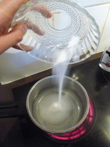
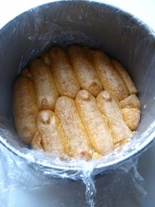
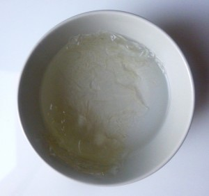
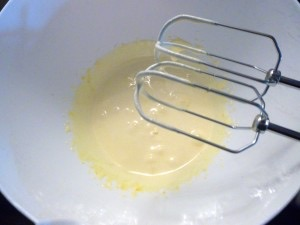
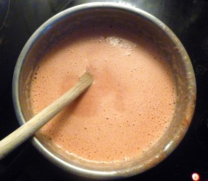
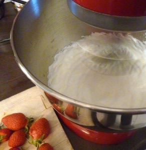
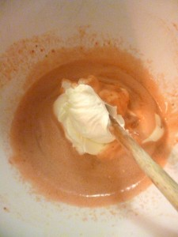
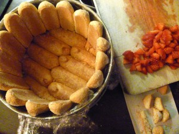
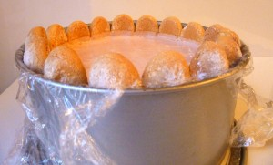
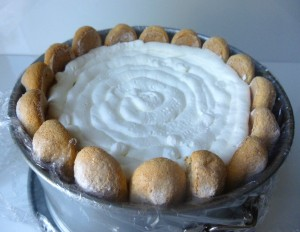
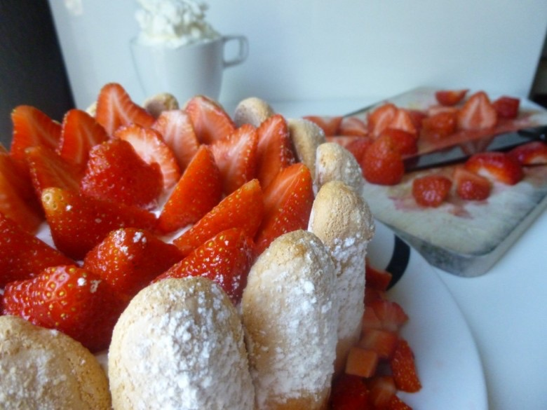
Les tips de la communauté
Dessert gourmet très apprécié pour sa présentation et son goût. L'auteure fournit des conseils détaillés sur le démoulage et le garnissage. Les commentateurs louent la clarté des explications et les améliorations apportées.
Astuces
- Utiliser du film étirable sur le moule pour éviter l'accrochage
- Moule à manquer avec fond amovible recommandé
- Crème légère à l'intérieur pour une charlotte qui se mange sans fin
- Démoulage facilité avec film étirable
Variantes suggérées
- Remplacer la gélatine par de l'agar-agar (testé avec réserves)
Ajustements signalés
- Préférer la gélatine à l'agar-agar pour cette pâtisserie